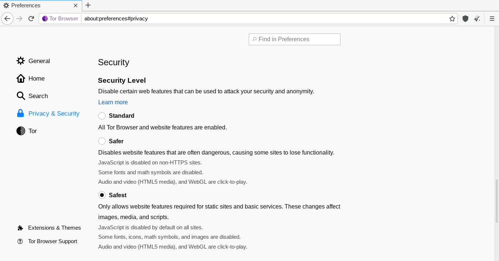

Tor Browser 快问快答——匿名浏览器到底值不值得装
整理 6 组最常被问到的问题，从定位、安装、核心原理、使用边界到替代方案，帮你三分钟搞清楚 Tor Browser 到底是什么、什么时候用。
整理一篇关于 Tor Browser 的快问快答。匿名浏览器这个东西说玄不玄，说简单也容易被误解——直接上问题。
Q1：Tor Browser 到底是什么？和 Chrome、Firefox 有啥本质区别？
Tor Browser 的TorBrowser官网上明确定位——这是 Tor 项目（起源于美国海军研究实验室，后来由独立的 Tor Project 社区维护）推出的开源匿名浏览器，基于 Firefox 深度定制。它和普通浏览器的区别不在"加了个插件"，而是从底层改了两件事：流量路由和反指纹策略。
流量走的是洋葱路由——不直接连目标服务器，而是随机经过三个志愿者维护的中继节点，每一层只知道前一层和后一层是谁，没有人能同时知道你是谁、你在访问什么。反指纹则是"强制统一"策略：无论你用什么系统、装了什么字体、屏幕多大，Tor Browser 对外报告的浏览器特征和全球数百万用户完全一样。匿名性来自"众人相同"，不是"个人隐藏"。
开箱就带 NoScript（按安全级别调控 JavaScript）、HTTPS Everywhere（强制加密连接）、Letterboxing（固定内页尺寸防分辨率识别）、Cookie 隔离、关闭自动清会话——这些保护全默认开启，不需要你手动调任何设置。

Q2：谁真的需要用它？普通人日常上网要不要装？
直接给结论：普通人日常主力浏览器不要用它，但有特定场景的人应该装一个备用。
适合的场景：记者在信息受限环境里访问新闻源、安全研究人员做匿名扫描、举报人联系敏感方、需要访问 .onion 结尾的隐藏服务。如果你所在的网络有 DNS 污染或 IP 封禁，Tor 配合内置网桥可以绕过。
不适合的场景更关键：日常刷网看视频（Tor 延迟高，视频基本卡成幻灯片）、登录 Google/银行/工作邮箱（Tor 出口节点 IP 会触发风控，还可能把你的日常行为和 Tor 身份关联）、下载大文件（Tor 社区普遍反对在 Tor 上跑 P2P）。
简单的判断标准：高匿名需求 × 能接受慢速 = 值得装；低匿名需求 × 需要速度 = 别折腾。两个都想要的话去看 Mullvad Browser + VPN 的组合方案。
Q3：怎么装？和装 Firefox 有啥不一样？
Tor Browser 的安装其实比 Firefox 更简单——它是便携包，解压就能用，不需要管理员权限，也不会往系统里写任何东西。
从官方下载拿安装包后解压到任意目录（建议别放系统盘，重装系统丢了就麻烦），双击里面的"Tor Browser"文件夹里的启动图标就行。第一次打开会弹连接界面，有两个选项：直接连接，或者配置网桥。直接连接适合网络没被封锁的情况；如果你所在的网络已经封了 Tor 中继，就点"配置连接"，让它从 BridgeDB 或通过 Moat 工具拿一个可用的网桥地址。
启动后浏览器窗口是固定尺寸的——别去最大化它，Letterboxing 是反指纹的默认保护，最大化反而会暴露你的真实屏幕分辨率。
Q4：它的"匿名"到底是怎么实现的？三层加密听起来很厉害，实际靠不靠谱？
洋葱路由的核心思路很简单：你的请求不是从你直接发给目标网站，而是先发到第一个中继（它只知道你是谁，不知道你要访问什么），再转给第二个中继（它只知道前后两个中继），再转给第三个中继（它知道要访问什么，但不知道你是谁），最后第三个中继把请求发给目标网站。响应走相反的路径回来。
每一跳之间都是独立加密的，所以：你的 ISP 只能看到你在连 Tor 中继，看不到你访问什么；目标网站只能看到最后那个中继的 IP，看不到你的真实 IP。三个中继里任意一个被监控，都无法同时拿到"谁在访问什么"这两个关键信息。
那为什么还有人说"Tor 不是完美匿名"？因为出口节点之后的流量不加密——第三个中继到目标网站之间是明文的（除非网站自己用 HTTPS，这也是 HTTPS Everywhere 默认强制 HTTPS 的原因）。另外，如果你在 Tor 里登录了某个账号，那个网站自然知道"这个 Tor 用户就是你"。还有一种理论上的风险：如果同一个观察者能同时监控第一个和第三个中继，就有可能关联。但 Tor 全球有 6000 多个中继，这种情况概率极低。
Q5：什么情况下不能用？有哪些新手容易踩的坑？
最大的坑不是技术问题，是使用习惯问题。
不要在 Tor Browser 里登录日常账号——Google、Facebook、银行、工作邮箱统统别登。你日常浏览器里正常用，Tor 里只做"不想被关联到你"的事。这是新手最常犯的错，也是匿名失效最直接的原因。
不要装任何额外扩展——Tor Browser 默认只带三个扩展：NoScript、HTTPS Everywhere、Tor Launcher。加第四个扩展就会破坏"统一指纹"——每个用户的扩展组合都不同，追踪者一眼就能从其他数百万 Tor 用户里挑出你。想装广告拦截？NoScript 够用了，NoScript 的默认设置已经挡了大部分追踪脚本和广告。
不要最大化浏览器窗口——看起来小事一桩，但 Letterboxing 固定内页尺寸就是为了让所有用户看起来屏幕一样。你一最大化，那个"1440x900"的尺寸就成了你的专属指纹。
定期换身份——Tor 会保持一个电路一段时间（大概 10 分钟）。访问完一个敏感站点之后，点左上角那个盾牌图标里的"New Identity"，让 Tor 重新构建三个中继的电路，断开之前的关联。
接受功能受限——部分网站在 Tor 下加载异常、视频播不了、验证码刷不出来，这些是正常的。别去折腾修复，那是在和匿名机制打架。更多安全操作和配置细节可以去TorBrowser文档翻一下。
Q6：和 VPN、Mullvad Browser 比，到底怎么选？
这是最容易混淆的三个东西，一张决策树解决：
需要 .onion 网站或绕过严格审查？ → Tor Browser
↓ 否
能接受 VPN 月付 + 想要强反指纹 + 需要速度？ → Mullvad Browser + VPN
↓ 否
日常防追踪，不想折腾，要最快速度？ → Brave / Firefox + 隐私设置Tor Browser 和 VPN 的核心区别在架构：VPN 是"把流量加密后直接发到一个服务器再出去"，快但信任单一服务商——VPN 提供商能看到你所有流量。Tor 是"三个志愿者中继跳着走"，慢但架构分散——没有任何一个单点知道你是谁、访问什么。
Mullvad Browser 值得特别说一下——这是 Tor Project 和 Mullvad VPN 合作的产品，去掉了 Tor 网络但完整继承了 Tor Browser 的全部反指纹设计（Letterboxing、字体统一、UA 统一、时区欺骗全都有）。配合付费的 Mullvad VPN 使用，速度接近正常浏览器，反指纹能力和 Tor Browser 一样强，只是没有洋葱路由那层网络保护。很多安全从业者的实际组合就是：日常主力 Mullvad Browser + VPN，敏感任务单独开 Tor Browser。

最后一句：如果你只是想日常防追踪、刷视频购物更快，别折腾 Tor Browser，Brave 或 Firefox + 隐私扩展够用了；但如果你有真实的匿名需求——记者、调查员、举报人、受限网络用户——它是目前公开可用的匿名浏览器里最成熟、最被信任的选择，值得装一个，用对姿势就好。这套中文版资料也同时托管在GitHub、Gitee和GitCode三个仓库，哪能访问就用哪一个。